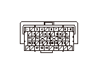
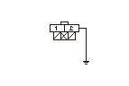

ブレーキ スイッチ信号故障診断
ブレーキ スイッチ信号の確認
1-1
イグニッション スイッチをON（
II
）にする
1-2
データ リスト内のブレーキSWをHDSで確認する
◆ OFF表示か
YES
-
ステップ
2
へ進む
NO
-
ブレーキ スイッチの調整を行う
ブレーキ スイッチ信号の確認
2-1
ブレーキ ペダルを踏んだ時のデータ リスト内のブレーキSWをHDSで確認する
◆ ON表示か
YES
-
ブレーキ スイッチ信号正常
NO
-
ステップ
3
へ進む
ECUとブレーキ スイッチ間（BKSWライン）の短絡点検
3-1
イグニッション スイッチをOFFにする
3-2
HDSでSCSモードのSCSショートを実行する
3-3
ECUカプラA（49P）を外す
3-4
ECUカプラA（49P）のNo.42端子とボディ アース間の導通を確認する
◆ 導通があるか
YES
-
ECU（A42端子）とブレーキ スイッチ、ヒューズ ボックス内No.24ストップ、ホーン
（10A）
ヒューズ間コードの短絡
NO
-
ステップ
4
へ進む

ECUとブレーキ スイッチ間（BKSWライン）の断線点検
4-1
ブレーキ スイッチ4PカプラのNo.2端子とボディ アース間をジャンパ ワイヤで短絡させる
4-2
ECUカプラA（49P）のNo.42端子とボディ アース間の導通を確認する
◆ 導通があるか
YES
-
•
ブレーキ スイッチとヒューズ ボックス内No.24ストップ、ホーン（10A）ヒューズ間コードの断線
•
ブレーキ スイッチの調整を行う
NO
-
ECU（A42端子）とブレーキ スイッチ間コードの断線
